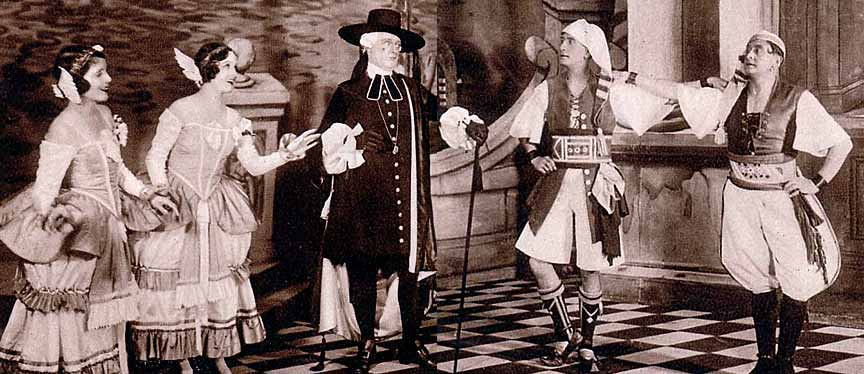

ALL.
So here we are, at the risk of our lives,
From ever so far, and we've brought your wives—
And to that end we've crossed the main,
And don't intend to return again!
(Enter Gianetta and Tessa. They rush to the arms of Marco and
Giuseppe.)
GIU.
Tessa!
TESS.
Giuseppe! {All embrace.}
GIA.
Marco!
MAR.
Gianetta!
TESSA and GIANETTA.
TESS.
After sailing to this island—
GIA.
Tossing in a manner frightful,
TESS.
We are all once more on dry land—
GIA.
And we find the change delightful,
TESS.
As at home we've been remaining—
We've not seen you both for ages,
GIA.
Tell me, are you fond of reigning?—
How's the food, and what's the wages?
TESS.
Does your new employment please ye?—
GIA.
How does Royalizing strike you?
TESS.
Is it difficult or easy?—
GIA.
Do you think your subjects like you?
TESS.
I am anxious to elicit,
Is it plain and easy steering?
GIA.
Take it altogether, is it
Better fun than gondoliering?
BOTH.
We shall both go on requesting
Till you tell us, never doubt it;
Everything is interesting,
Tell us, tell us all about it!
CHORUS. They will both go on requesting, etc.
TESS.
Is the populace exacting?
GIA.
Do they keep you at a distance?
TESS.
All unaided are you acting,
GIA.
Or do they provide assistance?
TESS.
When you're busy, have you got to
Get up early in the morning?
GIA.
If you do what you ought not to,
Do they give the usual warning?
TESS.
With a horse do they equip you?
GIA.
Lots of trumpeting and drumming?
TESS.
Do the Royal tradesmen tip you?
GIA.
Ain't the livery becoming!
TESS.
Does your human being inner
Feed on everything that nice is?
GIA.
Do they give you wine for dinner;
Peaches, sugar-plums, and ices?
BOTH.
We shall both go on requesting
Till you tell us, never doubt it;
Everything is interesting,
Tell us, tell us all about it!
CHORUS. They will both go on requesting, etc.
Sing hey, Lackaday! etc. When she found that he was fickle,
Was that great oak tree, She was in a pretty pickle, As she well might be—
But his gallantries were mickle, For Death followed with his sickle, And her tears
began to trickle For her great oak tree! Sing hey, Lackaday! etc.
MAR.
This is indeed a most delightful surprise!
TESS.
Yes, we thought you'd like it. You see, it was like
this. After you left we felt very dull and mopey, and the days
crawled by, and you never wrote; so at last I said to Gianetta,
"I can't stand this any longer; those two poor Monarchs haven't
got any one to mend their stockings or sew on their buttons or
patch their clothes—at least, I hope they haven't—let us all
pack up a change and go and see how they're getting on." And she
said, "Done," and they all said, "Done"; and we asked old Giacopo
to lend us his boat, and he said, "Done"; and we've crossed the
sea, and, thank goodness, that's done; and here we are,
and—and—I've done!
GIA.
And now—which of you is King?
TESS.
And which of us is Queen?
GIU.
That we shan't know until Nurse turns up. But never
mind that—the question is, how shall we celebrate the
commencement of our honeymoon? Gentlemen, will you allow us to
offer you a magnificent banquet?
Link Back to Opera
Material Design Icons from Google
favorite
cloud
attachment
